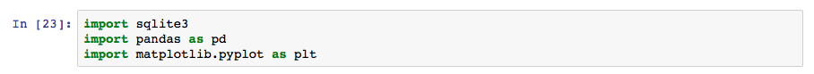
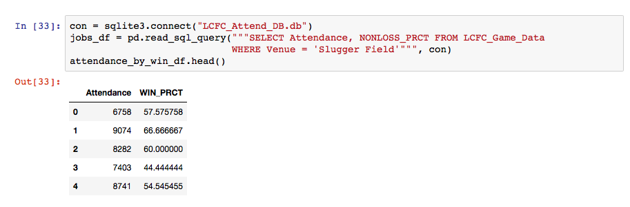

Louisville City FC Attendance Analysis
Attendance by win percentages
Since I am using Jupyter Notebook to analyze data, I first had to load up the Pandas and Matplotlib libraries:
I imported and displayed the win percentage table using Pandas
Using Matplotlib, I created and saved a scatterplot graph.
Attendance by Non-loss percentages
Next I imported and displayed the nonloss percentage table.
Like the win percentages, I created and saved a scatterplot graph of nonlosses & attendance using Matplotlib.